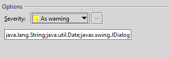
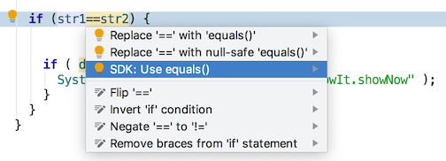

Code Inspections
The IntelliJ Platform provides tools designed for static code analysis called code inspections, which help the user maintain and clean up code without actually executing it. Custom code inspections can be implemented as IntelliJ Platform plugins. Examples of the plugin approach are the IntelliJ Platform SDK code samples inspection_basics and comparing_references_inspection. In addition, the comparing_references_inspection code sample demonstrates implementing a unit test.
You can also create custom inspections through the IntelliJ IDEA user interface. See Code Inspection and Creating Custom Inspections for more information.
Creating an Inspection Plugin
The comparing_references_inspection code sample adds a new inspection to the Java | Probable Bugs group in the Inspections list.
The inspection reports when the == or != operator is used between Java expressions of reference types.
It illustrates the components for a custom inspection plugin:
- Describing an inspection in the plugin configuration file.
- Implementing a local inspection class to inspect Java code in the IntelliJ Platform-based IDE editor.
- Creating a visitor to traverse the
PsiTreeof the Java file being edited, inspecting for problematic syntax. - Implementing a quick fix class to correct syntax problems by altering the
PsiTreeas needed. Quick fixes are displayed to the user like intentions. - Implementing an inspection preferences panel to display information about the inspection.
- Writing an HTML description of the inspection for display in the inspection preferences panel.
- Optionally, create a unit test for the plugin.
Although the IntelliJ Platform SDK code samples illustrate implementations of these components, it is often useful to see examples of inspections implemented in the intellij_community code base. This process can help find inspection descriptions and implementations based on what is visible in the IDE UI. The overall approach works for inspections aimed at other languages as well.
- Find an existing inspection that is similar to the one you want to implement in the Preferences | Editor | Inspections panel.
Note the display name of the inspection.
For example, the Java/Probable Bugs inspection “Object comparison using ‘==’, instead of ‘equals()’” is very similar to
comparing_references_inspection. - Use the display name text as the target for a search within the intellij_community project.
This will identify a bundle file if the display name is localized.
If it is not localized, the search finds either the plugin configuration (
plugin.xml) file where it is an attribute in the inspection description, or the Java implementation file where it provided by an overridden method. - In the case of localization, copy the key from the bundle file identified by the search.
- Use the key text as the target for a search within the intellij_community project. This search locates the plugin configuration file that describes the inspection.
- From the inspection description entry find the
implementationClassattribute value.
- Use the
implementationClasstext as the target of a class search in the intellij_community codebase to find the Java implementation file.
Creating an Inspection
The comparing_references_inspection code sample reports when the == or != operators are used between Java expressions of reference types.
The user can apply a quick fix to change a==b to a.equals(b), or a!=b to !a.equals(b).
The details of the comparing_references_inspection implementation illustrate the components of an inspection plugin.
Plugin Configuration File
The comparing_references_inspection is described as a <localInspection> type within the <extensions> elements in the comparing_references_inspection plugin configuration (plugin.xml) file.
Under the hood, inspection types are described as an <extensionPoint> in LangExtensionPoints.xml:
- The
localInspectiontype is used for inspections that operate on one file at a time, and also operate as the user edits the file. - The
globalInspectiontype is used for inspections that operate across multiple files, and the associated fix might, for example, refactor code between files. - The
inspectionToolProvidertype is not deprecated butlocalInspectionis preferred.
The minimum inspection description must contain the implementationClass attribute.
As shown in the comparing_references_inspection plugin configuration file, other attributes can be defined in the localInspection element, either with or without localization.
In most cases, it is simplest to define the attributes in the plugin configuration file because the underlying parent classes handle most of the class responsibilities based on the configuration file description.
Note that some attributes are not displayed to the user, so they are never localized.
As an alternative, inspections can define all of the attribute information (except implementationClass) by overriding methods in the inspection implementation class.
Inspection Implementation Java Class
Inspection implementations for Java files, like ComparingReferencesInspection, are often based on the Java class AbstractBaseJavaLocalInspectionTool.
The AbstractBaseJavaLocalInspectionTool implementation class offers methods to inspect Java classes, fields, and methods.
More generally, localInspection types are based on the class LocalInspectionTool.
Examining the class hierarchy for LocalInspectionTool shows that the IntelliJ Platform provides many child inspection classes for a variety of languages and frameworks.
One of these classes is a good basis for a new inspection implementation, but a bespoke implementation can also be based directly on LocalInspectionTool.
The primary responsibilities of the inspection implementation class are to provide:
- A
PsiElementVisitorobject to traverse thePsiTreeof the file being inspected. - A
LocalQuickFixclass to change the syntax of an identified problem. - A
JPanelto be displayed in the Inspections dialog.
Note that if an inspection’s description in the plugin configuration file defines only the implementation class, then the other attribute information has to be supplied by overriding methods in the Java implementation.
The ComparingReferencesInspection class defines two String fields:
QUICK_FIX_NAMEdefines the string users see when prompted to apply the quick fix.CHECKED_CLASSESholds a list of class names of interest to the inspection.
The overridden ComparingReferencesInspection methods are discussed in the sections below.
Visitor Implementation Class
The visitor class evaluates whether elements of the file’s PsiTree are of interest to an inspection.
The ComparingReferencesInspection.createOptionsPanel() method creates an anonymous visitor class based on JavaElementVisitor to traverse the PsiTree of the Java file being edited, inspecting for suspect syntax.
The anonymous class overrides three methods in particular.
visitReferenceExpression()to prevent any duplicate visitation of reference-type expressions.visitBinaryExpression(), which does all the heavy lifting. It is called to evaluate aPsiBinaryExpression, and it checks to see if the operands are==or!=, and if the operands are classes relevant to this inspection.isCheckedType()evaluates thePsiTypeof the operands to determine if they are of interest to this inspection.
Quick Fix Implementation
The quick fix class acts much like an intention, allowing the user to change the portion of PsiTree highlighted by the inspection.
A quick fix is invoked when the inspection highlights a PsiElement of interest and the user elects to make a change.
The ComparingReferencesInspection implementation uses the nested class CriQuickFix to implement a quick fix based on LocalQuickFix.
The CriQuickFix class gives a user the option to change the use of a == b and a != b expression to a.equals(b) and !a.equals(b) respectively.
The heavy lifting is done in CriQuickFix.applyFix(), which manipulates the PsiTree to convert the expressions.
The change to the PsiTree is accomplished by the usual approach to modification:
- Getting a
PsiElementFactory. - Creating a new
PsiMethodCallExpression. - Substituting the original left and right operands into the new
PsiMethodCallExpression. - Replacing the original binary expression with the
PsiMethodCallExpression.
Inspection Preferences Panel
The inspection preferences panel is used to display information about the inspection.
The panel created by ComparingReferencesInspection.createOptionsPanel() just defines a single JTextField to display in a JPanel.
This JPanel gets added to the default IntelliJ Platform Inspections Preferences dialog when the comparing_references_inspection short name is selected.
The JTextField allows editing of the CHECKED_CLASSES field while displayed in the panel.
Note that the IntelliJ Platform provides most of the UI displayed in the Inspections Preferences panel. As long as the inspection attributes and inspection description are defined correctly, the IntelliJ Platform displays the information in the Inspections Preferences UI.
Inspection Description
The inspection description is an HTML file. The description is displayed in the upper right panel of the Inspections Preferences dialog when an inspection is selected from the list.
Implicit in using LocalInspectionTool in the class hierarchy of the inspection implementation means following some conventions.
- The inspection description file is expected to be located under
<plugin root dir>/resources/inspectionDescriptions/. If the inspection description file is to be located elsewhere, overridegetDescriptionUrl()in the inspection implementation class. - The name of the description file is expected to be the inspection
<short name>.htmlas provided by the inspection description or the inspection implementation class. If a short name is not provided by the plugin, the IntelliJ Platform computes one.
Inspection Unit Test
The comparing_references_inspection code sample provides a unit test for the inspection.
See the Testing Plugins section for general information about plugin testing.
The comparing_references_inspection test is based on the UsefulTestCase class, part of the JUnit framework APIs.
This class handles much of the underlying boilerplate for tests.
By convention, the folder <project root>/testSource/testPlugin/ contains the test source code and must be marked as a “Tests” folder.
If it is not, a DevKit project cannot find the source code.
By convention, the folder <project root>/testData/ contains the test files and must be marked as a “Test Resources” folder.
The folder contains pairs of files for each test using the name convention *.java and *.after.java.
In the case of comparing_references_inspection the test files are before.java and before.after.java, and before1.java and before1.after.java.
The choice of before and before1 is arbitrary.
The comparing_references_inspection tests run the inspection on the *.java files, implement the quick fix, and compare the results with the respective *.after.java files.
Running the Comparing References Inspection Code Sample
The comparing_references_inspection code sample adds a new inspection to the Java | Probable Bugs group in the Inspections list.
The inspection reports when the == or != operator is used between Java expressions of reference types.
To run the sample plugin:
- Start IntelliJ IDEA, open the
intellij-sdk-docsproject, and highlight the comparing_references_inspection module. - Open the Project Structure dialog and ensure that the project settings are valid for your environment.
- If necessary, modify the Run/Debug Configurations for the
comparing_references_inspectionmodule. - Run the plugin by choosing Run on the main menu.
Configuring the Plugin
Once the plugin is launched, you can set the plugin options. You can specify the Java classes to participate in the code inspection and the severity level of the found probable bugs.
On the IDEA main menu, open the Preferences | Editor | Inspections dialog. In the list of the IntelliJ IDEA Java inspections, expand the Probable bugs node, and then click SDK: ‘==’ or ‘!=’ instead of ‘equals()’.

Under Options, you can specify the following plugin settings:
- From the Severity list, select the severity level of probable bugs the plugin finds such as Warning, Info, etc.
- In the text box under Severity, specify the semicolon separated list of Java classes to participate in this code inspection.
- When finished, click OK.
How does it work?
The plugin inspects your code opened in the IntelliJ IDEA editor or the code you are typing.
The plugin highlights the code fragments where two variables of the reference type are separated by == or != and proposes to replace this code fragment with .equals():

In this example, the str1 and str2 are variables of the String type.
Clicking SDK: Use equals() replaces:
return (str1==str2);
with the code:
return (str1.equals(str2));